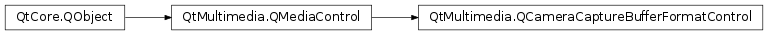

QCameraCaptureBufferFormatControl¶
Detailed Description¶
The
PySide2.QtMultimedia.QCameraCaptureBufferFormatControlclass provides a control for setting the capture buffer format.The format is of type
QVideoFrame.PixelFormat.The interface name of
PySide2.QtMultimedia.QCameraCaptureBufferFormatControlisorg.qt-project.qt.cameracapturebufferformatcontrol/5.0as defined inQCameraCaptureBufferFormatControl_iid().See also
-
class
PySide2.QtMultimedia.QCameraCaptureBufferFormatControl([parent=nullptr])¶ Parameters: parent – PySide2.QtCore.QObjectConstructs a new image buffer capture format control object with the given
parent
-
PySide2.QtMultimedia.QCameraCaptureBufferFormatControl.bufferFormat()¶ Return type: PySide2.QtMultimedia.QVideoFrame.PixelFormatReturns the current buffer capture format.
-
PySide2.QtMultimedia.QCameraCaptureBufferFormatControl.bufferFormatChanged(format)¶ Parameters: format – PySide2.QtMultimedia.QVideoFrame.PixelFormat
-
PySide2.QtMultimedia.QCameraCaptureBufferFormatControl.setBufferFormat(format)¶ Parameters: format – PySide2.QtMultimedia.QVideoFrame.PixelFormatSets the buffer capture
format.
-
PySide2.QtMultimedia.QCameraCaptureBufferFormatControl.supportedBufferFormats()¶ Return type: Returns the list of the supported buffer capture formats.
© 2018 The Qt Company Ltd. Documentation contributions included herein are the copyrights of their respective owners. The documentation provided herein is licensed under the terms of the GNU Free Documentation License version 1.3 as published by the Free Software Foundation. Qt and respective logos are trademarks of The Qt Company Ltd. in Finland and/or other countries worldwide. All other trademarks are property of their respective owners.